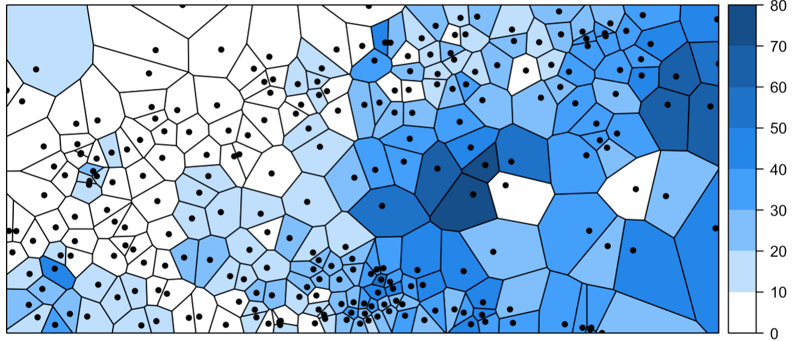
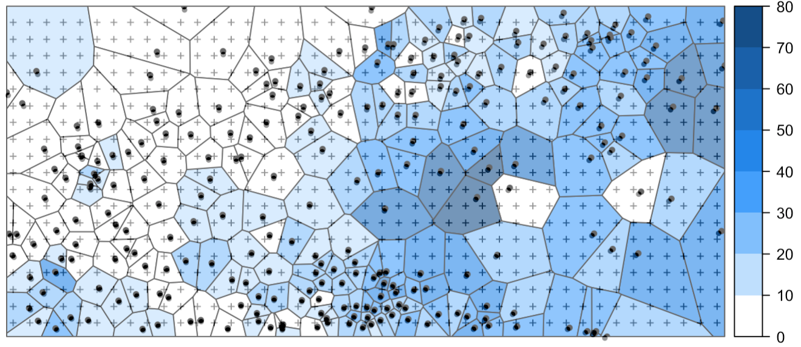
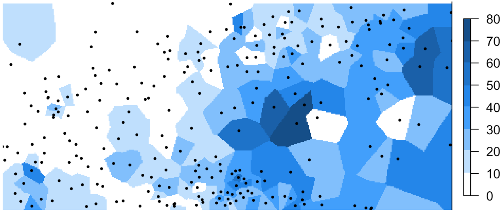
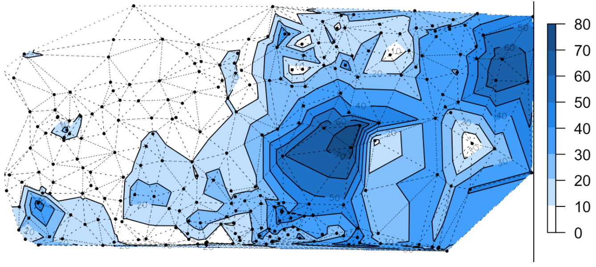
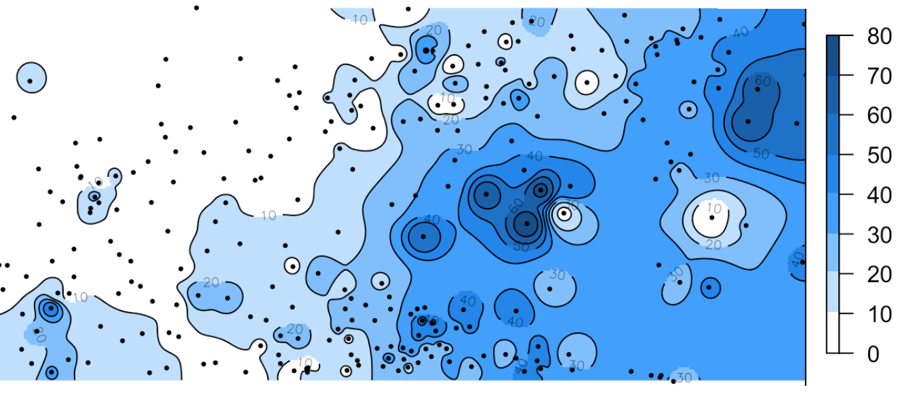
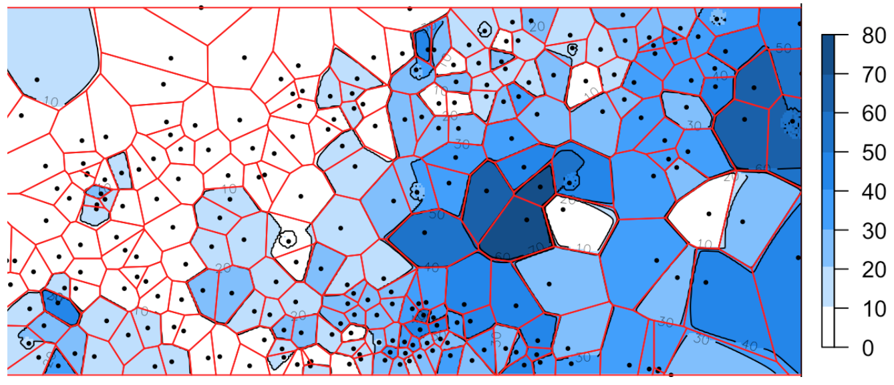
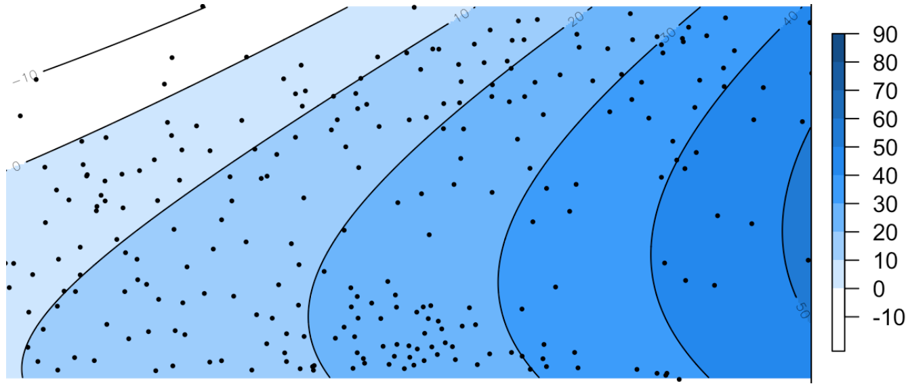
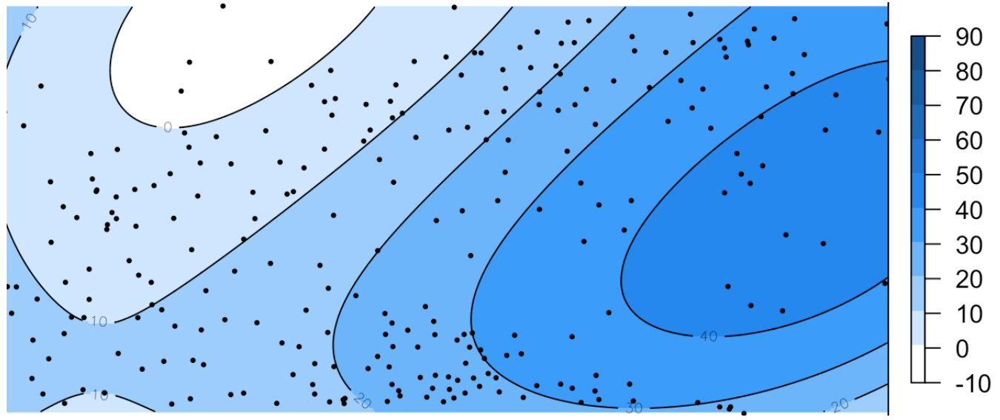

Детерминистическая интерполяция и аппроксимация
Пространственная статистика
13 февраля 2024 г.
Детерминистическая интерполяция
Интерполяция в общем случае — это способ нахождения промежуточных значений величины по имеющемуся дискретному набору известных значений
Методы которые производят интерполяцию на основе заданной аналитической зависимости, называют детерминистическими.
Параметры этой зависимости могут быть как априори заданы пользователем, так и определяться автоматически одним из методов оптимизации
Предполагается что анализируемые данные описываются некоторой аналитической функцией \(Z(p, \lambda)\), где \(p\) — точка, а \(\lambda\) — набор внутренних параметров модели.
Задача: на основе известных данных \(Z_i = Z(p_i)\), измеренных в точках \(p_i\), и другой информации об исследуемом явлении подобрать набор параметров \(\lambda\) и построить функцию \(Z(p, \lambda)\) для всей исследуемой области \(S\).
Узлы интерполяции
- Как правило, оценка производится по регулярной сетке узлов
- В общем случае положение узлов интерполяции произвольно
Сетка (растр) интерполяции
Каждый узел регулярной сетки можно сопоставить с центром ячейки, что обеспечивает сплошное покрытие и позволяет построить изолинии распределения показателя
Триангуляция Делоне и диаграмма Вороного
Триангуляция (на плоскости) — это разбиение фигуры на треугольники.
Под триангуляцией множества точек понимается триангуляция их выпуклой оболочки, в которой сами точки являются вершинами треугольников.
Диаграмма Вороного однозначно соответствует триангуляции Делоне и строится на основе серединных перпендикуляров к сторонам треугольников
Линейные интерполяторы
Искомая функция в произвольной точке \(\mathbf{p}\) ищется в виде линейной комбинации:
\[Z^{*}(\mathbf{p}) = \sum_{p_i \in D(\mathbf{p})} w_i (\mathbf{p}) Z(\mathbf{p}_i),\] где:
- \(Z^{*}(\mathbf{p})\) — оцениваемое значение в точке \(\mathbf{p}\),
- \(Z(\mathbf{p}_i)\) — известные значения в точках \(\mathbf{p}_i\),
- \(D(\mathbf{p})\) — множество точек \(\mathbf{p}_i\), из некоторой окрестности точки p, определяемой расстоянием или количеством,
- \(w_i(\mathbf{p})\) — нормированный вес точки \(\mathbf{p}_i\) для точки \(\mathbf{p}\)
Метод ближайшего соседа
Каждый узел интерполяции \(p\) получает значение, равное значению ближайшей к нему точки наблюдений \(p_k\)
Множество \(D\) состоит из единственной точки \(p_k (w_k = 1)\), в полигон Вороного которой попадает точка \(p\).
Результатом является ступенчатая поверхность, где в пределах зоны влияния каждой точки \(p_i\) значение функции постоянно и равно \(Z(p_i)\)
Метод ближайшего соседа
Всю область интерполяции можно разбить с помощью диаграммы Вороного на зоны принадлежности к точкам наблюдений

Метод ближайшего соседа
В пределах каждой ячейки значений интерполируемой величины считается постоянным
Метод ближайшего соседа
Каждый узел интерполяции получает значение, равное значению ближайшей к нему точки наблюдений
Метод ближайшего соседа
Результирующая поверхность является кусочно-постоянной
Метод ближайшего соседа
Результирующая поверхность является кусочно-постоянной
Метод естественного соседа
Множество \(D\) состоит из точек \(p_i\), которые являются соседями точки p при встраивании ее в диаграмму Вороного точек \(p_i\).
Веса определяются из соотношения:
\[w_i(p) = A(v \cap v_i) / A(v)\]
\(v_i\) — зона влияния точки \(p_i\) в исходной диаграмме Вороного,
\(v\) — зона влияния точки \(p\) при ее встраивании в диаграмму,
\(A\) — площадь зоны влияния,
\(\cap\) — пересечение
Интерполяция на основе триангуляции
Для выполнения интерполяции на первом этапе необходимо для каждого треугольника найти уравнение плоскости, которое содержит четыре неизвестных коэффициента:
\[Ax + By + Cz + D = 0\]
\[z(x, y) = -\frac{1}{C}(Ax+By+D)\]
Имея три точки \(p_1\), \(p_2\) и \(p_3\), искомые коэффициенты \(A, B, C, D\) можно получить путем решения уравнения, левая часть которого задана в форме определителя: \[\begin{vmatrix} x - x_1 & y - y_1 & z - z_1 \\ x_2 - x_1 & y_2 - y_1 & z_2 - z_1 \\ x_3 - x_1 & y_3 - y_1 & z_3 - z_1 \end{vmatrix} = 0\]
Интерполяция на основе триангуляции
Линейная интерполяция:
Интерполяция на основе триангуляции
Также возможно применение бикубической интерполяции, или метода Акимы, который позволяет сгладить поверхность за счет применения полиномов \(5\)-й степени, которые содержит \(21\) коэффициент:
\[z(x, y) = \sum_{j=0}^5 \sum_{k=0}^{5-j} q_{jk} x^j y^k\]
Значения функции, а также ее первых и вторых частных производных ( \(z\), \(z_x\), \(z_y\), \(z_{xx}\), \(z_{xx}\) и \(z_{yy}\)) задаются в каждой вершине треугольника, что дает \(18\) дополнительных условий.
Производные “склеиваются” по трем сторонам между смежными треугольниками, что дает еще \(3\) условия.
Интерполяция на основе триангуляции
Метод Акимы:
Метод обратно взвешенных расстояний
Веса определяются обратно пропорционально расстоянию: чем дальше исходная точка удалена, тем меньший вес она будет иметь в оценке.
\[z(\mathbf{p}) = \begin{cases} \dfrac{\sum_{i = 1}^{N}{ w_i(\mathbf{p}) z_i } }{ \sum_{i = 1}^{N}{ w_i(\mathbf{p}) } }, & \text{если } d(\mathbf{p},\mathbf{p}_i) \neq 0 \text{ для всех } i, \\ z_i, & \text{если } d(\mathbf{p},\mathbf{p}_i) = 0 \text{ для одного } i, \end{cases}\]
где \(w_i(\mathbf{p}) = | \mathbf p - \mathbf p_i | ^{-\beta}\) — весовая функция.
Метод Шепарда — одна из распространенных модификаций, в которой степень весовой функции равна \(2\):
\[w_i(p) = | \mathbf p - \mathbf p_i | ^{-2}\]
Метод обратно взвешенных расстояний
\(\beta = 2\)
Метод обратно взвешенных расстояний
\(\beta = 3\)
Метод обратно взвешенных расстояний
\(\beta = 4\)
Метод обратно взвешенных расстояний
\(\beta = 5\)
Метод обратно взвешенных расстояний
\(\beta \rightarrow \infty\)
 В предельном случае метод IDW вырождается в метод ближайшего соседа
Радиальные базисные функции
Радиальной функцией называется вещественнозначная функция, значение которой зависит только от расстояния между аргументом \(\textbf{p}\) и некой фиксированной точкой в пространстве \(\textbf{c}\):
\[\phi(\textbf{p}, \textbf{c}) = \phi\big(\lVert \textbf{p} - \textbf{c}\rVert\big)\]
Базисными радиальные функции называются когда их линейная комбинация используется для приближения произвольных вещественнозначных функций:
\[Z(\textbf{p}) = \sum_{i=1}^n \lambda_i \phi\big(\lVert \textbf{p} - \textbf{p}_i\rVert\big)\]
Именно этот принцип используется в соответствующем методе интерполяции.
Радиальные базисные функции
Используя условие \(Z(\textbf{p}_i) = z_i\) равенства интерполированного значения исходному, получаем систему линейных уравнений следующего вида, из которой находятся искомые коэффициенты \(\lambda_i\):
\[\begin{equation} \begin{pmatrix} z_1 \\ \vdots\\ z_n \end{pmatrix} = \begin{pmatrix} A_{11} & \dots & A_{1n} \\ \vdots & \ddots & \vdots \\ A_{n1} & \dots & A_{nn} \end{pmatrix} \begin{pmatrix} \lambda_1 \\ \vdots\\ \lambda_n \end{pmatrix} \end{equation}\]где \(A_{ij} = \phi\big(\lVert \textbf{p}_i - \textbf{p}_j\rVert\big)\), \(i, j = 1, 2, ..., n\).
Записав данную систему в матричном виде \(\mathbf{z} = \mathbf{A} \boldsymbol{\lambda}\), найти искомые коэффициенты можно путем обращения матрицы \(\mathbf{A}\) (в случае если ее определитель не равен нулю):
\[\boldsymbol{\lambda} = \mathbf{A}^{-1} \mathbf{z}\]
Радиальные базисные функции
Метод РБФ является одним из самых гибких благодаря широким возможностям выбора радиальной функции.
К числу широко используемых радиальных функций относятся:
Мультиквадрики: \(\phi(r) = \sqrt{r^2 + \delta^2}\)
Обратные мультиквадрики: \(\phi(r) = 1 / \sqrt{r^2 + \delta^2}\)
Мульти-логарифмическая: \(\phi(r) = \ln(r^2 + \delta^2)\)
Сплайны минимальной кривизны: \(\phi(r) = r^2 \ln(r^2 + \delta^2)\)
Недостатком метода РБФ является то, что поверхность может выходить за пределы исходного диапазона значений (хотя и обязательно проходит через исходные точки).
Радиальные базисные функции
Сплайн минимальной кривизны (thin plate spline — TPS), дает поверхность, обладающую максимально низкой кривизной между исходными точками.
Глобальная регрессия
Используется для глобальной аппроксимации тренда
\[P_1(x, y) = a + bx + cy\] \[P_{1.5}(x, y) = a + bx + cy + dxy\] \[P_{2}(x, y) = a + bx + cy + dxy + ex^2 + fy^2\] Неизвестные коэффициенты находятся по методу наименьших квадратов решением системы линейных уравнений относительно коэффициентов a, b и т.д. Минимизируется функция потери:
\[L = \sum_{i=1}^{n} \Large[Z(x_i, y_i) - P_k(x_i, y_i) \Large]^2\]
Глобальная регрессия
Пусть дана модель линейной регрессии \(z = X \beta\). Тогда полное выражение для функции потерь имеет вид:
\[L = \lVert X \beta - z \rVert ^2 = (X \beta - z)^T (X \beta - z) \\= z^T z - z^T X \beta - \beta^T X^T z + \beta^T X^T X \beta\] Далее находят производную этой функции:
\[\frac{\partial L}{\partial \beta} = \underbrace{\frac{\partial (z^T z)}{\partial \beta}}_{0} - \underbrace{\frac{\partial (z^T X \beta)}{\partial \beta}}_{X^T z} - \underbrace{\frac{\partial (\beta^T X^T z)}{\partial \beta}}_{X^T z} + \underbrace{\frac{\partial (\beta^T X^T X \beta)}{\partial \beta}}_{2 X^T X \beta} = \\ = - 2X^T z + 2 X^T X \beta,\]
Глобальная регрессия
Производная второй компоненты по правилу \(\frac{d(\color{red}{A^T} b)}{db} = A\):
\[\frac{\partial (\color{red}{z^T X} \beta)}{\partial \beta} = (z^T X)^T = X^T z\] Производная третьей компоненты по правилу \(\frac{d(b^t\color{red}{A})}{db} = A\):
\[\frac{\partial (\beta^T \color{red}{X^T z})}{\partial \beta} = X^T z\] Производная четвертой компоненты по правилу \(\frac{d(b^T \color{red}{A} b)}{db} = 2\color{red}{A}b\):
\[\frac{\partial (\beta^T \color{red}{X^T X} \beta)}{\partial \beta} = 2 \color{red}{X^T X} \beta\]
Глобальная регрессия
Поскольку функция потерь является неотрицательной квадратичной, ее минимум достигается в точке, где производная равняется нулю:
\[- 2X^T z + 2 X^T X \beta = 0\] Отсюда получаем:
\[X^T X \beta = X^T z\] Перенеся коэффициенты перед \(\beta\) в правую часть уравнения, получаем:
\[\color{red}{\boxed{\color{blue}{\beta = (X^T X)^{-1} X^T z}}}\]
Глобальная регрессия
В общем случае уравнение полиномиальной регрессии:
\[z_i \,=\, \beta_0 + \beta_1 x_i + \beta_2 x_i^2 + \cdots + \beta_m x_i^m + \varepsilon_i\ (i = 1, 2, \dots , n)\] Может быть переписано в матричной форме:
\[\begin{bmatrix} z_1\\ z_2\\ z_3 \\ \vdots \\ z_n \end{bmatrix}= \begin{bmatrix} 1 & x_1 & x_1^2 & \dots & x_1^m \\ 1 & x_2 & x_2^2 & \dots & x_2^m \\ 1 & x_3 & x_3^2 & \dots & x_3^m \\ \vdots & \vdots & \vdots & \ddots & \vdots \\ 1 & x_n & x_n^2 & \dots & x_n^m \end{bmatrix} \begin{bmatrix} \beta_0\\ \beta_1\\ \beta_2\\ \vdots \\ \beta_m \end{bmatrix} + \begin{bmatrix} \varepsilon_1\\ \varepsilon_2\\ \varepsilon_3 \\ \vdots \\ \varepsilon_n \end{bmatrix}\]
Или в краткой форме: \(\vec z = \mathbf{X} \vec \beta + \vec\varepsilon.\)
Глобальная регрессия
Аналогичным образом для плоскости:
\[z_i = \beta_0 + \beta_1x_i + \beta_2y_i\] Уравнение для вычисления коэффициентов быть переписано в матричной форме:
\[\begin{bmatrix} z_1\\ z_2\\ z_3 \\ \vdots \\ z_n \end{bmatrix}= \begin{bmatrix} 1 & x_1 & y_1 \\ 1 & x_2 & y_2 \\ 1 & x_3 & y_3 \\ \vdots & \vdots & \vdots \\ 1 & x_n & y_n \end{bmatrix} \begin{bmatrix} \beta_0\\ \beta_1\\ \beta_2\end{bmatrix} + \begin{bmatrix} \varepsilon_1\\ \varepsilon_2\\ \varepsilon_3 \\ \vdots \\ \varepsilon_n \end{bmatrix}\]
Глобальная регрессия
Для поверхности 2-й степени:
\[z_i = \beta_0 + \beta_1 x_i + \beta_2 y_i + \beta_3 x_iy_i + \beta_4 x_i^2 + \beta_5 y_i^2\] Уравнение для вычисления коэффициентов быть переписано в матричной форме:
\[\begin{bmatrix} z_1\\ z_2\\ z_3 \\ \vdots \\ z_n \end{bmatrix}= \begin{bmatrix} 1 & x_1 & y_1 & x_1y_1 & x^2_1 & y^2_1 \\ 1 & x_2 & y_2 & x_2y_2 & x^2_2 & y^2_2 \\ 1 & x_3 & y_3 & x_3y_3 & x^2_3 & y^2_3 \\ \vdots & \vdots & \vdots & \vdots & \vdots & \vdots \\ 1 & x_n & y_n & x_ny_n & x^2_n & y^2_n \end{bmatrix} \begin{bmatrix} \beta_0\\ \beta_1\\ \beta_2 \\ \beta_3 \\ \beta_4 \\ \beta_5 \end{bmatrix} + \begin{bmatrix} \varepsilon_1\\ \varepsilon_2\\ \varepsilon_3 \\ \vdots \\ \varepsilon_n \end{bmatrix}\]
Глобальная регрессия
Полином степени 1
Глобальная регрессия
Полином степени 2
Глобальная регрессия
Полином степени 3
Локальная регрессия
Пусть дано \(n\) точек исходных данных с координатами \(x\) (независимая переменная) и \(y\) (зависимая).
Задается число \(0 < \alpha \leq 1\), которое обозначает долю от общего количества точек \(n\), выбираемую в окрестности каждой точки для построения регрессии.
Тогда вес, который будет иметь каждая \(k\)-я точка исходных данных в уравнении регрессии для \(i\)-й точки исходных данных будет определяться по формуле:
\[w_k (x_i) = W\big((x_k - x_i)h_r^{-1}\big),\]
где \(h_i\) — расстояние до \(r = [\alpha n]\)-го по близости соседа точки \(x_i\), а \(W\) — весовая функция.
Локальная регрессия
Весовая функция отвечает следующим условиям:
- \(W(x) > 0\) если \(|x| < 1\);
- \(W(-x) = W(x)\);
- \(W(x)\) невозрастающая функция для \(x \geq 0\);
- \(W(x) = 0\) если \(|x| \geq 1\)
Одним из стандартных вариантов весовой функции является “трикубическая”:
\[W(x) = \begin{cases} (1 - |x|^3)^3, & \text{если } |x| < 1, \\ 0, & \text{если } |x| \geq 1. \end{cases}\]
Согласно определению весовой функции более близкие к \(x_i\) точки оказывают большее влияние на коэффициенты регрессии. Помимо этого за пределами расстояния \(h_i\) веса всех точек исходных данных будут обнуляться.
Локальная регрессия
Сглаженная оценка \(\hat{y}_i\) в точке \(x_i\) получается в виде полинома степени \(d\):
\[\hat{y}_i = \sum_{j=0}^d \hat{\beta}_j (x_i) x_i^j,\]
где коэффициенты \(\hat{\beta}_j\) находятся методом наименьших квадратов путем минимизации ошибки:
\[\sum_{k=1}^n w_k (x_i) (y_k - \beta_0 - \beta_1 x_k - ... - \beta_d x_k^d)^2\]
Процедура поиска коэффициентов регрессии повторяется для каждой из \(n\) точек.
Локальная регрессия
Полином степени 0 (горизонтальная плоскость)
Локальная регрессия
Полином степени 1 (наклонная плоскость)
Локальная регрессия
Полином степени 2
Иерархические базисные сплайны
Пусть дана область \(\Omega = \big\{(x, y)~|~0 \leq x < m,~ 0 \leq y < n \big\}\) и множество точек \(P\) нерегулярно распределенных в этой области.
Для выполнения интерполяции на эту область накладывается сетка \(\Phi\) размером \((m + 3) \times (n + 3)\). Это гарантирует, что каждая точка \(P\) (в том числе, находящаяся на границе \(\Omega\)) будет окружена окрестностью из \(4 \times 4 = 16\) узлов сетки ):
Расчетная сетка поверх области исходных данных
Иерархические базисные сплайны
Пусть сетка \(\Phi\) состоит из узлов \(\phi_{ij}\) и значения индексов меняются в следующих пределах: \(i = -1, 0, ..., m + 1, ~ j = -1, 0, ..., n + 1\).
Тогда функция аппроксимации в узле \(\phi_{ij}\) определяется следующим образом:
\[f(x, y) = \sum_{k=0}^3 \sum_{l=0}^3 B_k(s)B_l(t) \phi_{i+k, j+l},\]
где \(i = \lfloor x \rfloor -1\), \(j = \lfloor y \rfloor -1\), \(s = x - \lfloor x \rfloor\) и \(t = y - \lfloor y \rfloor\).
Иерархические базисные сплайны
\[f(x, y) = \sum_{k=0}^3 \sum_{l=0}^3 B_k(s)B_l(t) \phi_{i+k, j+l},\]
Функции \(B_k\) и \(B_l\) представляют собой кубические базисные функции в форме B-сплайнов, определяемые как:
\[B_0(t) = (1-t)^3/6,\\ B_1(t) = (3t^3 - 6t^2 + 4)/6,\\ B_2(t) = (-3t^3 + 3t^2 + 3t + 1)/6,\\ B_3(t) = t^3/6,\]
где \(0 \leq t < 1\). Данные функции служат в качестве весовых коэффициентов соответствующих узлов при определении значения в точке \((x, y)\).
Иерархические базисные сплайны
\[f(x, y) = \sum_{k=0}^3 \sum_{l=0}^3 B_k(s)B_l(t) \phi_{i+k, j+l},\]
Интерполируемые значения \(\phi_{ij}\) находятся исходя из условия прохождения функции \(f(x, y)\) через точки исходных данных.
Для значения \(z_c\) в точке \((x_c, y_c) ~|~ 1 \leq x_c, y_c < 2\) условие прохождения можно записать как:
\[z_c = \sum_{k=0}^3 \sum_{l=0}^3 w_{kl} \phi_{kl},\]
где \(w_{kl} = B_k(s) B_l(t), s = x_c - 1, t = y_c - 1\).
Иерархические базисные сплайны
\[z_c = \sum_{k=0}^3 \sum_{l=0}^3 w_{kl} \phi_{kl},\]
Поскольку существует множество значений \(\phi_{kl}\), которые удовлетворяют приведенному соотношению, выбирается то их сочетание, которое минимизирует сумму их квадратов \(\sum_{k=0}^3 \sum_{l=0}^3 \phi^2_{kl}\). Стратегически это позволяет уменьшить отклонение функции \(f\) относительно нуля по области \(\Omega\).
Решая задачу по методу наименьших квадратов, можно получить следующее выражение для значения в узле сетки \(\phi_{kl}\):
\[\phi_{kl} = \frac{w_{kl} z_c}{\sum_{a=0}^3 \sum_{b=0}^3 w^2_{ab}}\]
Функция \(f(x,y)\), построенная таким образом, будет равна \(z_c\) в точке \((x_c, y_c)\).
Иерархические базисные сплайны
В одной окрестности может оказаться более чем одна точка:
Перекрытие окрестностей (слева) и множество близких данных (справа)
При расчетах вводится понятие множества близких данных (proximity dataset): только исходные точки, попадающие в окрестность \(4 \times 4\) относительно расчетного узла, могут оказывать влияние на его значение.
Иерархические базисные сплайны
Для того, чтобы найти компромисс между значениями, индуцируемыми в узле разными точками \(\phi_c\), минимизируется функция ошибки:
\[e(\phi_{ij}) = \sum_c (w_c \phi_{ij} - w_c \phi_c)^2.\]
Фигурирующее в ней выражение \(w_c \phi_{ij} - w_c \phi_c\) представляет собой разницу между реальным и ожидаемым вкладом \(\phi_{ij}\) в значение функции \(f\) в точке \((x_c, y_c)\). Дифференцируя \(e(\phi_{ij})\) по \(\phi_{ij}\), получаем итоговое выражение для значения в узле интерполяции \(\phi_{ij}\):
\[\phi_{ij} = \frac{\sum_c w_c^2 \phi_c}{\sum_c w_c^2}.\]
Если окрестность не содержит ни одной точки, то \(\phi_{ij}\) принимается равным \(0\).
Иерархические базисные сплайны
В методе иерархических базисных сплайнов используется иерархия сеток \(\Phi_0, \Phi_1, ..., \Phi_h\), наложенных на область \(\Omega\).
На каждом последующем уровне вложенности, разрешение сетки удваивается. Это означает, что:
если сетка \(\Phi_k\) имела размер \((m +3) \times (n + 3)\), то на уровне \(\Phi_{k+1}\) ее размеры будут соответствовать \((2m + 3) \times (2n + 3)\).
расположение узла с координатами \((i, j)\) на сетке \(\Phi_k\) совпадает с располоожением узла \((2i, 2j)\) на сетке \(\Phi_{k+1}\)
Иерархические базисные сплайны
Интерполяция производится последовательно в направлении увеличения детализации сетки.
- На первой итерации на сетке \(\Phi_0\) получают функцию \(f_0\) и соответствующие ей отклонения в точках исходных данных \(\Delta^1 z_c = z_c - f_0(x_c, y_c)\).
- Далее на сетке \(\Phi_1\) в качестве \(f_1\) интерполируются уже не исходные величины \(z_c\), а отклонения \(\Delta^1 z_c\).
- Сумма \(f_0 + f_1\) позволяет вычислить отклонения второго порядка: \(\Delta^2 z_c = z_c - f_0(x_c, y_c) - f_1(x_c, y_c)\) в каждой точке \((x_c, y_c)\).
Иерархические базисные сплайны
Обобщая данный подход, можно сказать, что на \(k\)-м уровне иерархии находится функция \(f_k\), которая аппроксимирует значения отклонения на предыдущем уровне:
\[\Delta^k z_c = z_c - \sum_{i=0}^{k-1} f_i (x_c, y_c) = \Delta^{k-1} z_c - f_{k-1} (x_c, y_c),\]
где \(\Delta^0 z_c = z_c\).
Финальные значения в узлах сетки определяются суммой функций по всем уровням иерархии:
\[f = \sum_{k=0}^h f_k\]
Иерархические базисные сплайны
В данном методе поверхность представляется как сумма кусочно-полиномиальных функций, определяемых на основе двумерных базисных сплайнов
Поле потенциала
Наиболее часто метод потенциалов используется при анализе расселения. Существует 2 альтернативных подхода к расчету:
По населенным пунктам. В этом случае каждому населенному пункту необходимо сопоставить его радиус:
\[V_{i} = \frac{P_i}{r_i} + \sum_j \frac{P_j}{d_{ij}},\] где \(P_i\) — людность \(i\)-го населенного пункта, \(r_i\) — его радиус, \(d_{ij}\) — расстояние между \(i\)-м и \(j\)-м населенным пунктом.
В этом случае вычисленные значение необходимо далее интерполировать на заданную сетку.
Поле потенциала
Наиболее часто метод потенциалов используется при анализе расселения. Существует 2 альтернативных подхода к расчету:
В любых произвольно заданных локациях.
\[V_{p} = \sum_i \frac{P_i}{d_{pi}},\] В этом случае можно делать расчеты сразу на заданную сетку. При этом необходимо принудительно ограничивать минимально возможное значение \(d\), чтобы потенциал не стал бесконечным.
Интерполяция по ареалам
Пикнофилактический (сохраняющий объем) метод Тоблера.
Следующее условие должно выполняться для всех площадных единиц:
\[\int \int_{R_i} Z(x,y) dx dy = H_i,\]
где \(R_i\) — \(i\)-я площадная единица, \(H_i\) — исходное значение показателя, привязанное к \(i\)-й единице
Tobler W.R. Smooth Pycnophylactic Interpolation for Geographical Regions / W.R. Tobler // Journal of the American Statistical Association. – 1979. – Vol. 74. – № 367. – P. 519.
Интерполяция по ареалам
Пикнофилактический (сохраняющий объем) метод Тоблера.
- Наложить растровую сетку поверх площадных единиц.
- Вычислить значения в ячейках путем деления величины показателя на количество ячеек, попавших внутрь единицы.
- Осреднить значения в ячейках методом плавающего окна \(3 \times 3\). Обычно используется правило ладьи.
- Нормировать полученные значения таким образом, чтобы их сумма внутри каждой единицы совпала с изначальной.
Шаги 3-4 повторяются требуемое число раз.
Интерполяция по ареалам
Пикнофилактический (сохраняющий объем) метод Тоблера.
Исходные данные
Интерполяция по ареалам
Пикнофилактический (сохраняющий объем) метод Тоблера.
Результат интерполяции
Библиография
Самсонов Т. Е. Пространственная статистика: курс лекций